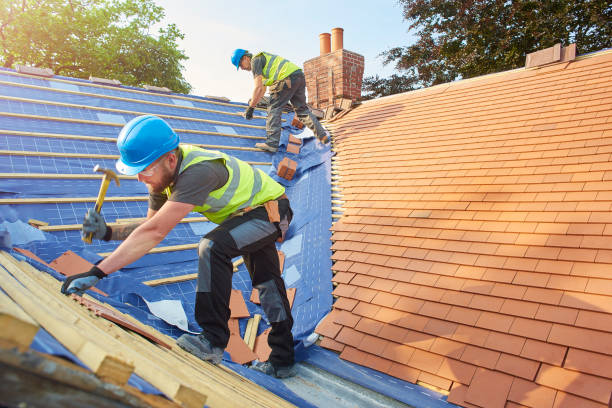
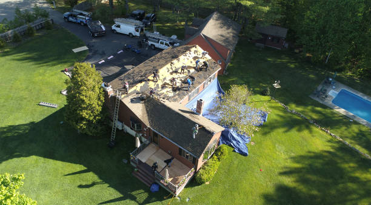

Roof Repair
Roof Repair Services for Leaks, Damage, and Roofing Problems That Need Attention
Address roof problems early with repair service designed to help protect your property, reduce further damage, and restore confidence in your roofing system.
About This Service
Roof Repair Help for Problems That Can Grow Worse If Ignored
Roof damage rarely improves on its own. Leaks, missing materials, storm-related wear, and visible roof issues can quickly lead to larger concerns inside and outside the property. Our roof repair service is focused on identifying the issue and helping property owners take the right next step.
Whether the problem is minor or more advanced, we focus on responsive service, careful evaluation, and repair solutions that help restore the roof and protect the structure.
Leak Protection
Repair service that helps address leaks before they cause larger issues.
Damage Control
Roofing repairs that help limit deterioration and restore protection.


What's Included
Roof Repair Service Focused on Fast Action and Dependable Solutions
Our roof repair service helps property owners address visible roofing issues before they create bigger, more expensive concerns.
Problem Identification
Review of visible damage, leaks, and areas of concern across the roof.
Targeted Repairs
Repairs designed to address the issue while helping restore roof performance.
Storm Damage Support
Help with roofing problems caused by weather, wind, and heavy rain exposure.
Extended Roof Life
Repair solutions intended to help preserve the life and condition of the roof.
Why Property Owners Choose Us
Roof Repair Service That Prioritizes Fast Response and Clear Guidance
Roof repair issues can be stressful because they often come with urgency. Our goal is to provide responsive support, straightforward recommendations, and repair solutions that help restore confidence in your roof.
Responsive Service
Fast attention for roof problems that need timely professional review.
Clear Recommendations
Practical communication that helps you understand the issue and next steps.
Quality Workmanship
Repairs completed with care and attention to long-term performance.
Reliable Results
Repair solutions designed to help stabilize and protect the roof system.

Our Process
A Roof Repair Process Designed to Find the Issue and Fix It Efficiently
We keep roof repair straightforward by focusing on evaluation, practical solutions, and communication you can follow from the first conversation to project completion.
Inspection
We review the roof issue, visible damage, and the surrounding affected areas.
Repair Planning
Our team determines the right repair approach based on roof condition and damage.
Repair Completion
We complete the repair work with attention to quality and protective performance.
Roof Repair FAQs
Common Questions About Roof Repair
Here are some common questions about roof repair service, visible roof damage, and leaks.
Need More Help?
Contact our team if you are dealing with a leak, damage, or a roof issue that needs attention.
Contact UsSigns can include leaks, water stains, missing materials, visible damage, sagging areas, or roof sections that appear worn or lifted.
Yes, even a smaller leak can allow moisture to spread and cause larger interior or structural issues if it is left untreated.
Not always. Some issues can be handled with targeted repairs, while more severe damage or age-related failure may require replacement.
Yes, you can contact us for a free estimate and guidance on the condition of your roof and the right repair path.
Roof damage should be reviewed as soon as possible so the issue does not expand and create additional repair or interior damage.
Get Started Today
Need Roof Repair in Boca Raton?
Contact Roofers Boca Raton today for a free estimate and let our team help you address leaks, damage, and roofing concerns before they get worse.